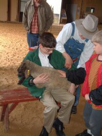

The Haunted Maze

Welcome to the Haunted Maze! For those of you who are brave enough to enter, we promise you a frightfully good time as you wind your way through our corn maze on Friday and Saturday nights during October.
Our Haunted Maze is a family-friendly experience designed to provide just the right amount of spooky fun. You'll encounter costumed characters, eerie sounds, and surprising twists and turns as you make your way through the darkened pathways.
The Haunted Maze is not recommended for children under 8 years old. All children must be accompanied by an adult. Please note that the maze involves walking on uneven ground in the dark, so wear appropriate footwear.
We recommend bringing a flashlight, as the maze can be quite dark in places. However, part of the fun is navigating by moonlight and the occasional strategically placed lantern!
Special Halloween Weekend: Join us for our big Halloween spectacular on the last weekend of October, featuring special activities, contests, and extra scares!
Hours
- October Fridays: 5 pm - 9 pm
- October Saturdays: 5 pm - 9 pm
- Halloween Weekend: Extended hours until 11 pm
Admission
- Age 12 and Over: $7.00
- Ages 8 - 11: $5.00
- Ages 7 and under: Not recommended
Safety Guidelines
- Children under 12 must be accompanied by an adult
- Wear closed-toe shoes and appropriate clothing
- Bring a flashlight for safety
- Stay on marked paths at all times
- No running in the maze